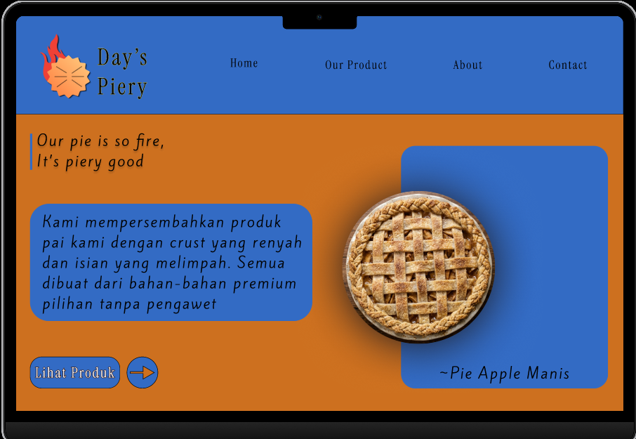
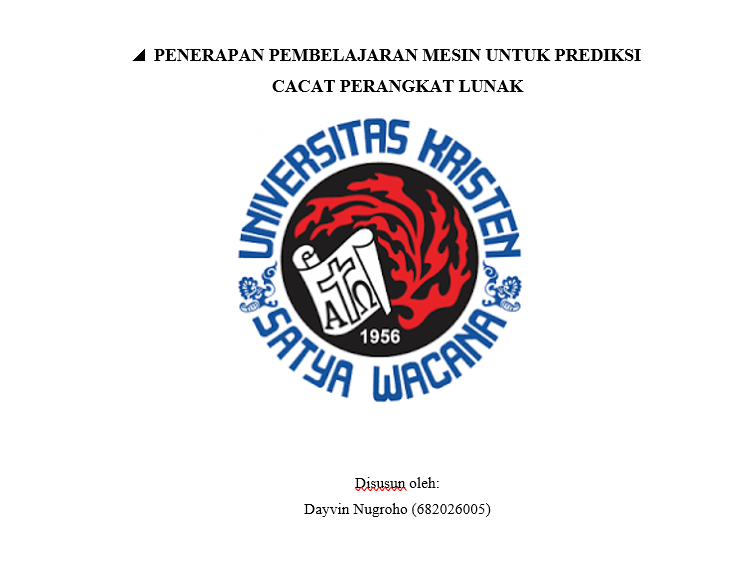
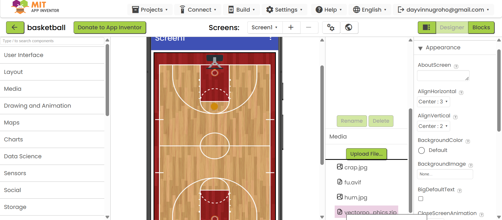

TK Kalam Kudus Surakarta
2012-2014
Dapat menempuh pendidikan di TK secara baik.
Seorang mahasiswa UKSW yang sedang menempuh perjalanannya di prodi Sistem Informasi
Hubungi SayaSaya merupakan mahasiswa Sistem Informasi UKSW yang tertarik pada analisis data dan pemrograman. Saat ini saya sedang belajar sistem informasi, dasar pemrograman, pengantar teknologi informasi, dan matematika diskrit.
2012-2014
Dapat menempuh pendidikan di TK secara baik.
2014-2020
Pernah mengikuti ekstrakulikuler drum dan mendapatkan peringkat nomor 12 dari 27.
2020-2023
Dimulai di masa covid-19 dimana pembelajaran basis online dan memberikan tantangan yang lumayan banyak.
2023-2026
Menempuh pendidikan menengah atas di jurusan IPS selama 3 tahun. Selama masa sekolah, saya mulai mendalami dunia pemrograman dan pengembangan web dasar melalui ekstrakurikuler pemrograman sekolah.
2026-sekarang
Menjadi mahasiswa baru S1 Sistem Informasi 2026 sampai sekarang.
Sedang belajar HTML untuk menyusun struktur halaman website.
Sedang mempelajari CSS untuk mengatur tampilan website.
Baru memulai belajar JavaScript untuk menambahkan interaksi pada website.
Sudah memahami dasar-dasar Python sebagai bahasa pemrograman.
Baru memulai menggunakan Git untuk mengelola versi kode.
Sudah mulai menggunakan Figma untuk merancang desain website.

Website landing page responsif pertama yang dibangun menggunakan Figma. Karya ini dibuat untuk membantu keahlian saya di Figma

Sebuah makalah akan perkembangan AI dari Ms.Word. Makalah ini dibuat untuk meneliti akan machine learning untuk prediksi cacat perangkat lunak

Merupakan aplikasi sederhana yang dibuat dari Mit App Inventor untuk projek latihan membuat app bebas
Punya pertanyaan atau ingin berkolaborasi? Kirimkan pesan melalui form di bawah ini.